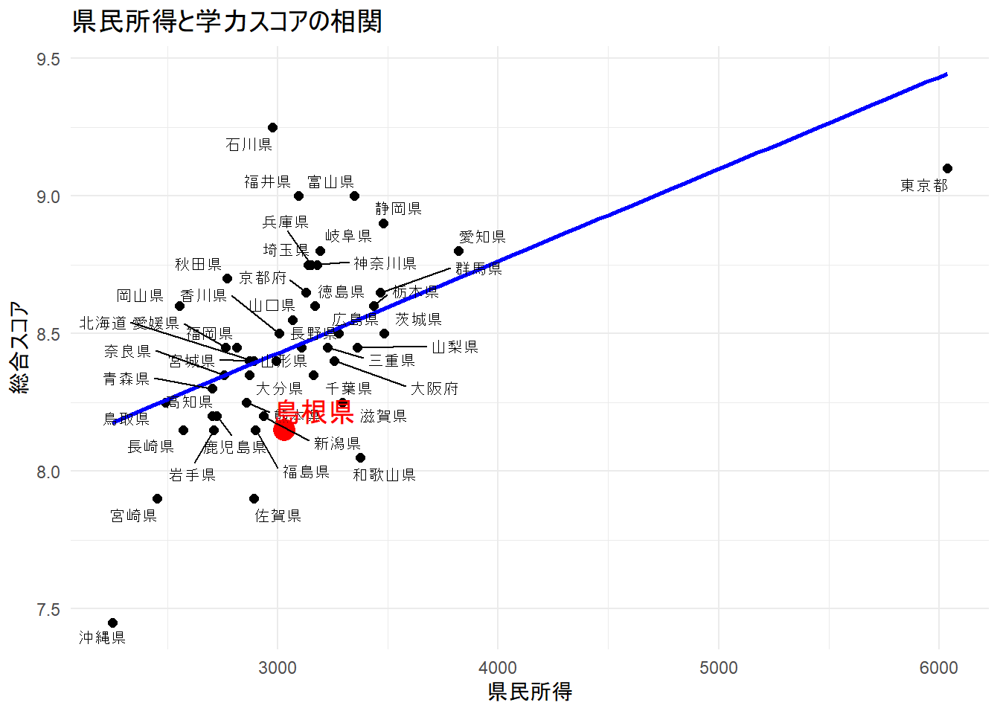

library(ggplot2)
library(ggrepel)
print(getwd())[1] "C:/Users/sakii/Desktop/R_experimen/R_experimen"# データ読み込みと総合スコア列の作成
my_data <- read.csv("data.csv", fileEncoding = "UTF-8")
my_data$score_avg <- rowMeans(my_data[, c("score_jp", "score_math")])
print(head(my_data)) pref income score_jp score_math score_avg
1 北海道 2891 8.6 8.2 8.40
2 青森県 2704 8.5 8.1 8.30
3 岩手県 2709 8.6 7.7 8.15
4 宮城県 2871 8.6 8.2 8.40
5 秋田県 2769 9.0 8.4 8.70
6 山形県 2994 8.6 8.2 8.40# 島根県のデータを抽出
shimane <- my_data[my_data$pref == "島根県", ]
other_prefectures <- my_data[my_data$pref != "島根県", ]
# 散布図の作成
p <- ggplot(my_data, aes(x = income, y = score_avg)) +
geom_point(color = "black", size = 2) +
geom_point(data = shimane, aes(x = income, y = score_avg), color = "red", size = 5) +
geom_smooth(method = "lm", se = FALSE, color = "blue") +
geom_text_repel(
data = other_prefectures,
aes(label = pref),
color = "black",
size = 3,
max.overlaps = Inf
) +
geom_text_repel(
data = shimane,
aes(label = pref),
color = "red",
size = 5,
max.overlaps = Inf
) +
labs(
title = "県民所得と学力スコアの相関",
x = "県民所得",
y = "総合スコア"
) +
theme_minimal()
print(p)`geom_smooth()` using formula = 'y ~ x'
ggsave("graph.png", plot = p, width = 10, height = 7, dpi = 300)`geom_smooth()` using formula = 'y ~ x'# 単回帰分析
model <- lm(score_avg ~ income, data = my_data)
summary(model)
Call:
lm(formula = score_avg ~ income, data = my_data)
Residuals:
Min 1Q Median 3Q Max
-0.72745 -0.13412 -0.01495 0.10724 0.82890
Coefficients:
Estimate Std. Error t value Pr(>|t|)
(Intercept) 7.425e+00 2.406e-01 30.863 < 2e-16 ***
income 3.347e-04 7.697e-05 4.348 7.76e-05 ***
---
Signif. codes: 0 '***' 0.001 '**' 0.01 '*' 0.05 '.' 0.1 ' ' 1
Residual standard error: 0.2827 on 45 degrees of freedom
Multiple R-squared: 0.2959, Adjusted R-squared: 0.2802
F-statistic: 18.91 on 1 and 45 DF, p-value: 7.761e-05# 島根県の残差を計算
shimane_residuals <- resid(model)[my_data$pref == "島根県"]
print("島根県の残差:")[1] "島根県の残差:"print(shimane_residuals) 32
-0.2891756